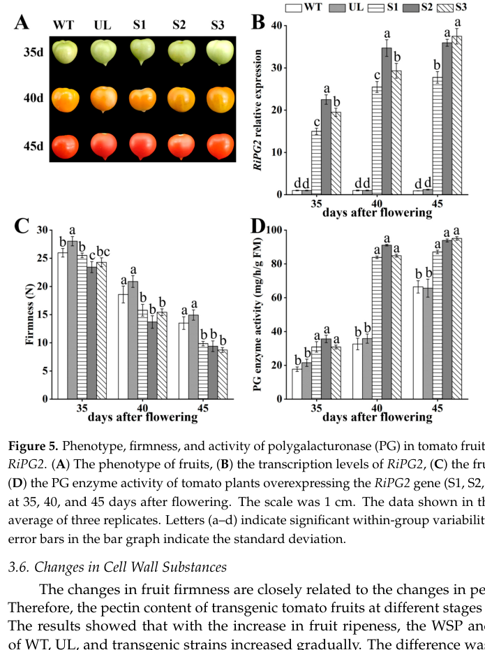

PG2 (Polygalacturonase-2, UniProt P05117) is the classic tomato fruit-ripening endo-polygalacturonase (EC 3.2.1.15), a secreted glycosyl hydrolase family 28 (GH28) cell-wall enzyme. It catalyzes the random hydrolysis of (1->4)-alpha-D-galacturonosyl linkages in homogalacturonan / de-esterified pectic polyuronides, depolymerizing and solubilizing cell-wall pectin in the apoplast of the ripening pericarp. PG activity is undetectable in mature-green fruit and rises sharply as fruit change colour, driven by ethylene-dependent transcriptional induction; PG2 is expressed essentially only in ripening fruit (at the protein level). The mature catalytic polypeptide exists as two glyco-isoforms (PG2A/PG2B, differing mainly in N-glycosylation) and can associate with a wall-anchored, non-catalytic beta/converter subunit (GP1) to form the more thermostable PG1 complex; PG2 itself is the catalytic subunit. Functional-genetics evidence is definitive for its biological role: antisense suppression of tomato PG (the basis of the Calgene "Flavr Savr" tomato) and Ds insertional knockouts strongly reduce pectin depolymerization and extend shelf life without arresting other ripening programs (ethylene production and lycopene accumulation are unaffected), and reduced SlPG2 expression correlates with firmer fruit. Thus PG2 is mechanistically a pectin-degrading hydrolase acting in cell-wall disassembly; "fruit ripening" is the developmental process the enzyme serves, not its molecular function. The protein localizes to the cell wall / apoplast and is N-glycosylated.
| GO Term | Evidence | Action | Reason |
|---|---|---|---|
|
GO:0009835
fruit ripening
|
IEA
GO_REF:0000043 |
MARK AS OVER ANNOTATED |
Summary: SPKW (GO_REF:0000043) annotation derived from the UniProt keyword "Fruit ripening"; snapshot-only, removed in the current GOA release. PG2 is a pectin-degrading hydrolase ENZYME whose expression and action are confined to ripening fruit, but "fruit ripening" is the developmental maturation process the enzyme serves, not its molecular function or its direct biological-process role.
Reason: GOA's removal of this annotation was JUSTIFIED. This is the canonical "enzyme labelled with the process it serves" over-annotation pattern: GO:0009835 is defined as "a developmental maturation process that has as participant a fruit", whereas PG2 is a single, well-characterized cell-wall glycosidase (EC 3.2.1.15) acting in the apoplast. PG2 is genuinely ripening-associated - PG activity is undetectable in mature-green fruit and appears only as fruit change colour [PMID:7449759], and the enzyme is expressed essentially only in ripening fruit - but the precise, mechanistic biology is captured by polygalacturonase activity (GO:0004650, MF) plus pectin catabolic process (GO:0045490) and cell-wall disassembly (plant-type cell wall organization, GO:0009664), all of which are proposed/retained below. Crucially, PG2 acts DOWNSTREAM of the ripening program rather than driving it: antisense suppression of PG strongly reduces pectin depolymerization yet leaves ethylene production and lycopene accumulation unchanged, so the fruit still "ripens" while softening less [file:SOLLC/PG2/PG2-deep-research-falcon.md]. Annotating the gene with the whole developmental process therefore over-states its role and conflates the process with the enzyme's function. Retain as a non-core, historical keyword annotation but mark as over-annotated; the genuine contribution to ripening is better represented by the specific MF/BP terms below.
Supporting Evidence:
PMID:7449759
Polygalacturonase activity is not detectable in mature green tomato fruits
but appears as fruits begin to change colour and continues to increase during
the ripening period.
PMID:9747798
the gene for tomato polygalacturonase (PG), a critical
enzyme in fruit ripening.
file:SOLLC/PG2/PG2-deep-research-falcon.md
PG activity is not required to initiate ethylene-mediated ripening, but rather acts downstream as a cell-wall disassembly effector
|
|
GO:0004650
polygalacturonase activity
|
IEA
GO_REF:0000120 |
ACCEPT |
Summary: IEA annotation (combined methods: ARBA, InterPro IPR000743, EC 3.2.1.15) for polygalacturonase activity. This is the core, experimentally validated molecular function of PG2.
Reason: Correct and central. PG2 is a characterized endo-polygalacturonase: the UniProt entry carries EC=3.2.1.15 with experimental evidence, and the catalytic activity (random hydrolysis of (1->4)-alpha-D-galacturonosyl linkages, GO:0004650) was measured directly by Chun & Huber, who studied "the hydrolysis of polygalacturonic acid and cell walls by PG isozyme 2 (PG2)" under apoplast-approximating conditions [PMID:9701584]. The PROSITE POLYGALACTURONASE motif and two catalytic active-site residues (His270 proton donor, Asp293) are annotated in UniProt. This is the gene's defining molecular function and should be retained as core.
Supporting Evidence:
PMID:9701584
We examined the hydrolysis of polygalacturonic
acid and cell walls by PG isozyme 2 (PG2) under conditions widely adopted in the
literature
file:SOLLC/PG2/PG2-deep-research-falcon.md
they cleave internal α-1,4 linkages in **homogalacturonan/pectic polyuronides**, contributing to pectin disassembly during ripening
|
|
GO:0005975
carbohydrate metabolic process
|
IEA
GO_REF:0000002 |
MARK AS OVER ANNOTATED |
Summary: IEA annotation from InterPro (IPR000743, GH28) for the broad parent process "carbohydrate metabolic process". Not wrong, but uninformatively general for a pectin-specific hydrolase.
Reason: "Carbohydrate metabolic process" is a very high-level grouping term. PG2 does metabolize a carbohydrate polymer (pectin / homogalacturonan), so the term is not incorrect, but it conveys almost none of the gene's actual biology. The specific, informative biological process is pectin catabolic process (GO:0045490), proposed as a NEW term below and directly supported by the in-vitro hydrolysis of pectic polymers [PMID:9701584] and by the antisense/in-vivo depolymerization evidence [PMID:7827495]. Once the specific pectin-catabolism term is present, the broad carbohydrate-metabolism parent adds no information and is best regarded as an over-annotation.
Supporting Evidence:
PMID:9701584
The hydrolysis of cell wall pectins by tomato (Lycopersicon esculentum)
polygalacturonase (PG) in vitro is more extensive than the degradation affecting
file:SOLLC/PG2/PG2-deep-research-falcon.md
they cleave internal α-1,4 linkages in **homogalacturonan/pectic polyuronides**, contributing to pectin disassembly during ripening
|
|
GO:0009830
cell wall modification involved in abscission
|
IEA
GO_REF:0000117 |
MODIFY |
Summary: IEA annotation from an ARBA machine-learning model (GO_REF:0000117) propagating an abscission-related cell-wall-modification process to the GH28 polygalacturonase family. The cell-wall-modification essence is right, but the "abscission" context is wrong for this fruit-ripening-specific isozyme.
Reason: PG2 does modify/disassemble the cell wall, but it does so during fruit RIPENING, not in abscission. The annotation is a family-level ARBA over-generalization: the GH28 polygalacturonase family includes abscission-zone PGs (a distinct paralogous role), and the rule has been applied to PG2 by sequence similarity rather than evidence. PG2 is expressed essentially only in ripening fruit, and there is no evidence for a PG2 abscission function. The genuine, gene-specific biology (apoplastic pectin degradation driving cell-wall disassembly in the softening pericarp) is better captured by the more general, context-neutral "plant-type cell wall organization" (GO:0009664), which explicitly covers disassembly of the pectin-containing wall. Modify to that term rather than retaining the incorrect abscission context.
Proposed replacements:
plant-type cell wall organization
Supporting Evidence:
PMID:2152163
Tomato polygalacturonase is a cell wall enzyme secreted in large amounts during
tomato fruit ripening.
PMID:7827495
PG2 is
responsible for pectin solubilization and depolymerization in vivo
|
|
GO:0009901
anther dehiscence
|
IEA
GO_REF:0000117 |
REMOVE |
Summary: IEA annotation from an ARBA machine-learning model (GO_REF:0000117) assigning anther dehiscence to PG2. This is a different developmental context served by other members of the polygalacturonase family, not by the tomato fruit-ripening PG2.
Reason: This is a family-level ARBA over-annotation. Anther dehiscence (GO:0009901, "the dehiscence of an anther to release the pollen grains") is mediated in other species by anther/pollen-specific polygalacturonases (e.g. Arabidopsis QRT/ADPG paralogs), not by the tomato fruit PG2. Tomato PG2 is expressed essentially only in ripening fruit at the protein level [PMID:2152163], and neither the primary literature nor the deep-research synthesis provides any evidence of a role in anther dehiscence (the term "dehiscence" does not appear anywhere in the research corpus). The annotation reflects sequence similarity to a distinct paralogous subfamily and should be removed.
Supporting Evidence:
PMID:2152163
Tomato polygalacturonase is a cell wall enzyme secreted in large amounts during
tomato fruit ripening.
file:SOLLC/PG2/PG2-deep-research-falcon.md
**PG2 (UniProt P05117; gene PG2 / PG2A / PG2B) from tomato is an extracellular/apoplastic, ripening-associated endopolygalacturonase (EC 3.2.1.15)
|
|
GO:0010047
fruit dehiscence
|
IEA
GO_REF:0000117 |
REMOVE |
Summary: IEA annotation from an ARBA machine-learning model (GO_REF:0000117) assigning fruit dehiscence to PG2. Tomato is a fleshy, indehiscent berry; fruit dehiscence (pod/silique shatter) is a dry-fruit process served by distinct polygalacturonase paralogs.
Reason: Another family-level ARBA over-annotation that is biologically inapplicable to tomato. Fruit dehiscence (GO:0010047, "the spontaneous opening of the fruit permitting the escape of seeds") is a property of dry dehiscent fruits (e.g. Arabidopsis siliques, legume pods) and is mediated by dehiscence-zone polygalacturonases. The tomato fruit is a fleshy indehiscent berry, and PG2's documented role is pectin depolymerization and softening during ripening [PMID:7827495], not seed-release pod shatter. There is no evidence (literature or deep research) for a PG2 dehiscence function. The annotation is an incorrect cross-paralog transfer and should be removed.
Supporting Evidence:
PMID:7827495
PG2 is
responsible for pectin solubilization and depolymerization in vivo
file:SOLLC/PG2/PG2-deep-research-falcon.md
ripening-associated **endo-polygalacturonase** (EC 3.2.1.15) implicated in **pectin depolymerization** during fruit softening
|
|
GO:0048046
apoplast
|
IEA
GO_REF:0000044 |
ACCEPT |
Summary: IEA annotation from the UniProtKB Subcellular Location vocabulary mapping (GO_REF:0000044) for apoplast localization. Directly supported by experiment; this is where PG2 carries out its function.
Reason: Strongly supported. PG2 is a secreted, signal-peptide-bearing glycoprotein that is processed and transported to the cell wall / apoplast: Osteryoung et al. showed tomato PG is "a cell wall enzyme secreted in large amounts during tomato fruit ripening" and that the protein was "properly localized in cell walls" of transgenic tissue [PMID:2152163]. The UniProt subcellular location is "Secreted, extracellular space, apoplast" and "Secreted, cell wall". The apoplast (which includes cell walls and intercellular spaces) is precisely the compartment where PG2 degrades pectin, and the low-pH / ionic conditions of the fruit apoplast define its operating environment [PMID:9701584]. Accept as a core cellular-component annotation.
Supporting Evidence:
PMID:2152163
Tomato polygalacturonase is a cell wall enzyme secreted in large amounts during
tomato fruit ripening.
PMID:9701584
under conditions approximating the
apoplastic environment of tomato fruit (pH 6.0 and K+ as the predominate
cation)
|
|
GO:0045490
pectin catabolic process
|
IDA
PMID:9701584 Polygalacturonase-mediated solubilization and depolymerizati... |
NEW |
Summary: PG2 hydrolyzes and depolymerizes pectin (homogalacturonan / pectic polyuronides). This is the specific, informative biological process that should replace the over-general "carbohydrate metabolic process" and should be present alongside the polygalacturonase MF.
Reason: The genuine biological process of PG2 - breakdown of pectin - is not directly represented in current GOA (only the broad GO:0005975 parent). Chun & Huber measured PG2-mediated hydrolysis of polygalacturonic acid and cell-wall pectins directly in vitro [PMID:9701584], and Watson et al. demonstrated that in vivo "PG2 is responsible for pectin solubilization and depolymerization" in ripening fruit [PMID:7827495]. Pectin catabolic process (GO:0045490, "the breakdown of pectin, a polymer containing a backbone of alpha-1,4-linked D-galacturonic acid residues") is the precise process term and is already used as the IBA term for this gene group in UniProt's GO cross-references. IDA is justified by the direct in-vitro hydrolysis assays.
Supporting Evidence:
PMID:9701584
Pectin depolymerization by PG2 was extensive at pH values from 4.0 to 5.0 and
was further enhanced at high K+ levels.
PMID:7827495
PG2 is
responsible for pectin solubilization and depolymerization in vivo
file:SOLLC/PG2/PG2-deep-research-falcon.md
PG2 largely drives depolymerization
|
|
GO:0009664
plant-type cell wall organization
|
IMP
PMID:7827495 Reduction of tomato polygalacturonase beta subunit expressio... |
NEW |
Summary: By depolymerizing apoplastic pectin, PG2 contributes to disassembly of the pectin-containing cell wall during fruit softening. This captures the gene's developmental contribution to ripening at the correct, mechanistic level (cell-wall disassembly) rather than the whole "fruit ripening" process.
Reason: "Plant-type cell wall organization" (GO:0009664) explicitly covers "the disassembly of the cellulose and pectin-containing cell wall", which is exactly what PG2 effects during ripening. In-vivo evidence is strong: reducing PG2/beta-subunit activity changes the extent of pectin solubilization and depolymerization of the wall [PMID:7827495], and insertional knockout of PG produces a >1000-fold reduction in PG activity [PMID:9747798], with reduced PG correlating with firmer fruit (less wall disassembly). This is the preferred process term to capture PG2's contribution to softening, replacing both the incorrect "abscission" context (GO:0009830) and the over-broad developmental "fruit ripening" (GO:0009835). IMP is justified by the antisense and insertional loss-of-function phenotypes.
Supporting Evidence:
PMID:7827495
increased
solubilization and depolymerization of pectins due to the action of
polygalacturonase (PG)
PMID:9747798
there was at least a 1000-fold reduction in
polygalacturonase levels in those plants bearing Ds insertions in PG exons
file:SOLLC/PG2/PG2-deep-research-falcon.md
PG activity is not required to initiate ethylene-mediated ripening, but rather acts downstream as a cell-wall disassembly effector
|
Q: Given that PG2 antisense suppression strongly reduces pectin depolymerization but only modestly affects whole-fruit firmness and does not prevent ripening, what is the precise quantitative contribution of PG2 to softening relative to other wall-modifying enzymes (pectate lyase, expansins, beta-galactosidases)?
Suggested experts: Donald Grierson
Q: Does the wall-anchored beta/converter subunit (GP1) regulate PG2 catalytic output in vivo primarily by recruiting/retaining PG2 in the wall, or by limiting its access to pectic substrate?
Suggested experts: Dean DellaPenna
Experiment: Use viscometric and reducing-sugar assays plus size-exclusion chromatography to quantify endo-polygalacturonase kinetics (Km, kcat) of purified PG2A and PG2B on homogalacturonans of defined degree of methyl-esterification, confirming substrate specificity and the requirement for prior pectin methylesterase de-esterification.
Hypothesis: PG2 preferentially cleaves de-esterified homogalacturonan, so its in-vivo activity is gated by apoplastic pectin methylesterase action.
Type: in vitro enzyme kinetics
Experiment: Generate clean CRISPR/Cas9 SlPG2 knockouts in a modern tomato cultivar and profile cell-wall pectin molecular-weight distribution, fruit firmness over postharvest storage, and the ripening transcriptome, separating PG2's wall-disassembly role from the broader ripening program.
Hypothesis: SlPG2 loss reduces apoplastic pectin depolymerization and extends shelf life while leaving ethylene-driven colour/aroma ripening intact.
Type: targeted gene knockout and cell-wall phenotyping
The research report should be a detailed narrative explaining the function, biological processes, and localization of the gene product. Citations should be given for all claims.
You should prioritize authoritative reviews and primary scientific literature when conducting research. You can supplement
this with annotations you find in gene/protein databases, but these can be outdated or inaccurate.
We are specifically interested in the primary function of the gene - for enzymes, what reaction is catalyzed, and what is the substrate specificity? For transporters, what is the substrate? For structural proteins or adapters, what is the broader structural role? For signaling molecules, what is the role in the pathway.
We are interested in where in or outside the cell the gene product carries out its function.
We are also interested in the signaling or biochemical pathways in which the gene functions. We are less interested in broad pleiotropic effects, except where these elucidate the precise role.
Include evidence where possible. We are interested in both experimental evidence as well as inference from structure, evolution, or bioinformatic analysis. Precise studies should be prioritized over high-throughput, where available.
Polygalacturonase-2 (PG2; UniProt P05117) from Solanum lycopersicum (tomato) is a ripening-associated endo-polygalacturonase (EC 3.2.1.15) implicated in pectin depolymerization during fruit softening. Classic genetic evidence using antisense suppression supports a division of labor between tomato PG isoforms: PG2 largely drives depolymerization, while PG1 may contribute more to solubilization. Tomato PG2 occurs as two glyco-isoforms (PG2A/PG2B) and can associate with a β/h “converter” subunit to form a PG1-like complex under apoplast-like conditions. Recent 2024 work links NO/GSNOR signaling to reduced SlPG2 transcript abundance, reduced PG activity, and increased firmness during postharvest ripening.
None of the retrieved primary studies explicitly cite the UniProt accession P05117 in their text; therefore, the mapping is supported by concordant isoform naming and biochemical definitions (PG2/PG2A/PG2B in tomato fruit), which match the UniProt description provided by the user. (pogson1993accumulationofthe pages 5-6, peeters2004influenceofβ‐subunit pages 1-2)
Tomato fruit polygalacturonases are described as endopolygalacturonases (EC 3.2.1.15; poly(1,4-α-D-galacturonide) glycanohydrolases), i.e., they cleave internal α-1,4 linkages in homogalacturonan/pectic polyuronides, contributing to pectin disassembly during ripening. (pogson1993accumulationofthe pages 1-2)
Tomato fruit contains three related PG isoenzymes commonly discussed as PG1, PG2A, and PG2B. (peeters2004influenceofβ‐subunit pages 1-2)
- PG2A/PG2B (“PG2”): described as the single catalytic polypeptide forms, differing mainly in glycosylation. (peeters2004influenceofβ‐subunit pages 1-2)
- PG1: a more thermostable form that includes a converter (β/h) subunit associated with the PG2 catalytic polypeptide; reconstitution studies indicate the converter can transform PG2 into a PG1-like form in vitro. (peeters2004influenceofβ‐subunit pages 1-2)
This isoenzyme framing is central for functional annotation: PG2 corresponds to the catalytic pectin-hydrolyzing enzyme, whereas PG1 reflects an assembled complex with altered stability/association properties. (pogson1993accumulationofthe pages 5-6, peeters2004influenceofβ‐subunit pages 1-2)
Functional reaction class: PG2 is a pectin-degrading enzyme (EC 3.2.1.15) implicated in depolymerizing solubilized pectin fragments during ripening. (smith1990inheritanceandeffect pages 9-10, peeters2004influenceofβ‐subunit pages 1-2)
Genetic evidence for depolymerization role: In antisense-PG tomato lines, PG2 was described as “almost completely inhibited,” and the authors infer PG2 “may be responsible for pectin depolymerisation,” while PG1 may be more associated with solubilization. (smith1990inheritanceandeffect pages 9-10)
Two PG2 isoforms were reported with apparent molecular masses of about 45 kDa (PG2A) and 43 kDa (PG2B). (pogson1993accumulationofthe pages 5-6)
Biochemical evidence shows PG2 can associate with a β-subunit (converter; ~39 kDa glycoprotein) to form a PG1-like complex, with association robust across a wide range of salt/pH conditions. (pogson1993accumulationofthe pages 5-6)
PG2–β-subunit/PG1-like complex formation occurs under low ionic strength and pH ~4–5.5, which the authors explicitly describe as expected for the fruit apoplast environment, supporting extracellular/cell-wall function. (pogson1993accumulationofthe pages 5-6)
The retrieved evidence does not provide enzyme kinetic constants (Km, kcat), detailed substrate preferences (e.g., degree of methylesterification dependence), or numeric pH/salt optima for PG2 specifically; these would require additional primary biochemical characterization papers not captured in the retrieved set. (peeters2004influenceofβ‐subunit pages 1-2, pogson1993accumulationofthe pages 5-6)
A PG1 β-subunit was detected in pericarp but not locule tissue, and the authors propose the β-subunit is positioned in the cell wall to provide a binding site for active PG2 synthesized during ripening—supporting functional localization in the cell-wall/apoplast compartment of pericarp tissue. (pogson1993accumulationofthe pages 1-2)
In antisense-PG lines with large reductions in PG activity, ethylene production and lycopene accumulation were not altered, suggesting PG activity is not required to initiate ethylene-mediated ripening, but rather acts downstream as a cell-wall disassembly effector. (smith1990inheritanceandeffect pages 9-10)
A 2024 postharvest study reported that SlGSNOR silencing increased firmness (notably between 6–12 days postharvest) while reducing PG activity and lowering SlPG2 transcript abundance. (liu2024thecrucialrole pages 10-12)
This positions SlPG2 within a modern regulatory model where NO/GSNOR signaling modulates expression and/or activity of multiple cell-wall enzymes during postharvest ripening and softening. (liu2024thecrucialrole pages 10-12)
Smith et al. (1990; published March 1990) used antisense suppression of tomato PG, reporting: (smith1990inheritanceandeffect pages 9-10)
- PG activity reduction: ~50–95% inhibition across transformants; up to ~99% reduction in one line when antisense copy number was increased. (smith1990inheritanceandeffect pages 9-10)
- Pectin depolymerization suppressed (molecular-weight shift): soluble polyuronide weight-average Mr decreased to ~80,000 in normal fruit 14 days after breaker, but antisense lines remained at higher Mr (~95,000 and ~135,000), consistent with reduced depolymerization. (smith1990inheritanceandeffect pages 9-10)
- Solubilization vs depolymerization separation: total EDTA-soluble uronic acids were not strongly affected despite large PG reductions, supporting a mechanistic distinction between solubilization and depolymerization during ripening. (smith1990inheritanceandeffect pages 9-10)
A 2024 study overexpressing a heterologous PG2-class gene (raspberry RiPG2) in tomato provides contemporary corroboration that elevated PG activity drives softening and pectin fraction shifts (increased soluble pectin fractions; decreased protopectin and other wall components). While this is not tomato PG2 (P05117) itself, it supports conservation of PG2-class enzyme function in fleshy fruit softening. (li2024overexpressionofthe pages 8-11, li2024overexpressionofthe media 1edf85ad, li2024overexpressionofthe media 7bb70ee1)
Liu et al. (February 2024) report that SlGSNOR impairment decreases PG activity and reduces SlPG2 transcript abundance, concurrently increasing firmness during postharvest storage; this connects SlPG2 to a signaling framework (NO homeostasis) with translational relevance to postharvest management. URL: https://doi.org/10.3390/ijms25052729 (liu2024thecrucialrole pages 10-12)
A 2024 CRISPR/Cas9 tomato breeding study emphasizes that suppressing pectin-degrading enzymes (including PG and PL) increases firmness and shelf life, and demonstrates CRISPR knockouts of firmness-negative targets (FIS1 and PL) yielding significantly enhanced firmness while maintaining overall quality traits. Although it does not target SlPG2 specifically, it frames PG-pathway engineering (including SlPG2) as a practical breeding axis. URL: https://doi.org/10.3390/cimb47010009 (yang2024crisprcas9allowsfor pages 1-2)
The 1990 antisense study provides an early biotechnology blueprint: strong PG suppression (50–95% to 99% activity reductions) reduced pectin depolymerization while allowing normal ripening markers (ethylene, lycopene), demonstrating that manipulating PG (including PG2-dominated activity) can alter texture-related cell-wall outcomes without globally arresting ripening. URL: https://doi.org/10.1007/BF00028773 (smith1990inheritanceandeffect pages 9-10)
The 2024 postharvest work suggests that chemical inhibition or VIGS-based perturbation of the NO/GSNOR axis can reduce SlPG2 expression and PG activity and thereby maintain firmness. This points to a “regulate the regulator” strategy rather than direct PG2 inhibition/knockout. URL: https://doi.org/10.3390/ijms25052729 (liu2024thecrucialrole pages 10-12)
In food-processing contexts, PG isoenzyme assembly affects stability: PG2 (PG2A/PG2B) is described as heat labile, whereas association with the converter/h-subunit yields more thermostable PG1-like behavior, relevant for heat-treated tomato products (juice/paste) where endogenous PG activity can influence viscosity/texture. URL: https://doi.org/10.1002/bit.20134 (peeters2004influenceofβ‐subunit pages 1-2)
Across classic and recent evidence, a coherent mechanistic model emerges:
1. During ripening, tomato pericarp strongly induces PG expression (high PG mRNA levels), and the PG isoenzyme complement shifts such that catalytic PG2 becomes prominent. (smith1990inheritanceandeffect pages 9-10)
2. PG2 contributes primarily to depolymerization of solubilized polyuronides; reducing PG activity strongly attenuates depolymerization (molecular-weight shift) without necessarily preventing solubilization or other ripening programs. (smith1990inheritanceandeffect pages 9-10)
3. In the apoplast/cell wall, PG2 can associate with a β/h-subunit positioned in the wall, potentially providing binding/stability features and giving rise to PG1-like complexes under apoplast-like pH conditions. (pogson1993accumulationofthe pages 5-6, pogson1993accumulationofthe pages 1-2)
4. Modern postharvest regulation links SlPG2 expression to NO/GSNOR signaling, integrating PG2 into broader redox/signaling control over softening enzyme networks. (liu2024thecrucialrole pages 10-12)
The following table consolidates major annotation claims, the evidence, and citable sources.
| Claim/Annotation element | Evidence summary | System studied | Publication (authors, year) | URL/DOI | Context citation ID(s) |
|---|---|---|---|---|---|
| Enzyme reaction / substrate class | Tomato polygalacturonase (PG) is described as a pectin-degrading enzyme. In processing-focused work, PG2A/PG2B are the heat-labile catalytic forms collectively termed PG2, while PG1 contains PG2 plus an accessory subunit; this supports annotation of PG2 as the catalytic pectin-hydrolyzing component acting on cell-wall pectins. | Tomato fruit PG isoenzymes from ripening/processed fruit | Peeters et al., 2004 | https://doi.org/10.1002/bit.20134 | (peeters2004influenceofβ‐subunit pages 1-2) |
| Role in ripening-associated pectin depolymerization | Antisense suppression of tomato PG reduced total PG activity by ~50–95% (up to ~99% in higher-copy lines) and decreased pectin depolymerization without preventing ripening. Authors concluded PG1 may contribute to pectin solubilization, whereas PG2, which was nearly abolished, may be mainly responsible for pectin depolymerization. | Transgenic antisense tomato fruit during ripening | Smith et al., 1990 | https://doi.org/10.1007/BF00028773 | (smith1990inheritanceandeffect pages 9-10) |
| Quantitative effect on pectin molecular mass | In normal fruit, soluble pectin molecular mass dropped to ~80 kDa by 14 days after breaker, whereas antisense lines remained at ~95 kDa and ~135 kDa, consistent with reduced PG2-linked depolymerization. Total EDTA-soluble uronic acid was not strongly changed, separating solubilization from depolymerization. | Transgenic antisense tomato fruit | Smith et al., 1990 | https://doi.org/10.1007/BF00028773 | (smith1990inheritanceandeffect pages 9-10) |
| Isoforms PG2A and PG2B | PG2 exists as two isoforms, PG2A and PG2B, with approximate apparent molecular masses of 45 kDa and 43 kDa, respectively; differences are attributed mainly to glycosylation rather than distinct catalytic identities. | Ripening tomato fruit polygalacturonase preparations | Pogson & Brady, 1993; Peeters et al., 2004 | https://doi.org/10.1007/BF00240897; https://doi.org/10.1002/bit.20134 | (pogson1993accumulationofthe pages 5-6, peeters2004influenceofβ‐subunit pages 1-2) |
| PG1 complex formation with beta/h-subunit | PG1 is formed from catalytic PG2 plus a glycoprotein beta/h-subunit (converter). In vitro, purified PG2 added to mature-green pericarp formed a PG1-like complex containing PG2 and the ~39 kDa beta-subunit, with PG1-like mobility and antigenicity. | Tomato fruit pericarp extracts and purified isoenzymes | Pogson & Brady, 1993 | https://doi.org/10.1007/BF00240897 | (pogson1993accumulationofthe pages 5-6) |
| Properties of beta/h-subunit interaction | PG2 binding to the beta-subunit was robust across salt, pH, and reducing conditions and could occur even with denatured beta-subunit, indicating a strong non-covalent association. The complex forms under low ionic strength and pH 4–5.5, conditions relevant to the fruit apoplast/cell-wall space. | In vitro reconstitution using tomato PG fractions | Pogson & Brady, 1993 | https://doi.org/10.1007/BF00240897 | (pogson1993accumulationofthe pages 5-6) |
| Thermal stability distinction between PG1 and PG2 | PG2A/PG2B are heat-labile catalytic polypeptides, while PG1 is relatively thermostable because it contains the h-subunit. The h-subunit can convert PG2 to PG1 in vitro, and the resulting PG1 resembles native PG1 in physicochemical behavior. | Tomato juice / purified isoenzymes under heat and pressure treatment | Peeters et al., 2004 | https://doi.org/10.1002/bit.20134 | (peeters2004influenceofβ‐subunit pages 1-2) |
| In vivo relevance of PG1 | Processing work notes uncertainty over whether PG1 exists pre-formed in vivo or forms during extraction/handling, so the most secure annotation for P05117 is the catalytic PG2 polypeptide rather than the PG1 complex. | Tomato fruit PG isoenzymes | Peeters et al., 2004 | https://doi.org/10.1002/bit.20134 | (peeters2004influenceofβ‐subunit pages 1-2) |
| Contribution to fruit softening | Reduced PG/SlPG2 expression is associated with firmer fruit, while higher PG activity accelerates softening. In SlGSNOR-silenced tomato fruit, firmness was significantly higher from 6–12 days postharvest, accompanied by reduced PG activity and lower SlPG2 transcript abundance. | Postharvest tomato fruit with SlGSNOR silencing | Liu et al., 2024 | https://doi.org/10.3390/ijms25052729 | (liu2024thecrucialrole pages 10-12) |
| Regulatory factor: NO/GSNOR axis | SlGSNOR positively promotes ripening-associated softening; when SlGSNOR is silenced or inhibited, SlPG2 transcript abundance decreases together with PG, pectate lyase, and cellulase activities. This implicates NO/GSNOR signaling upstream of SlPG2 expression during postharvest softening. | Postharvest tomato fruit treated with N6022/GSNO or infected with TRV-SlGSNOR | Liu et al., 2024 | https://doi.org/10.3390/ijms25052729 | (liu2024thecrucialrole pages 10-12) |
| Broader functional inference from modern tomato transgenics | In tomato, heterologous overexpression of raspberry RiPG2 increased PG activity, decreased firmness, increased water-soluble and ion-bound pectins, and decreased protopectin/CSP/cellulose/hemicellulose, supporting the conserved interpretation that PG2-class enzymes drive pectin solubilization/depolymerization and softening. | Transgenic tomato overexpressing RiPG2 | Li et al., 2024 | https://doi.org/10.3390/agronomy14010160 | (li2024overexpressionofthe pages 11-12, li2024overexpressionofthe pages 8-11) |
| Ripening-stage expression association | In the RiPG2 transgenic tomato study, PG activity remained higher than controls throughout development, and firmness decreased accordingly; the authors interpret PG activity as promoting cell-wall hydrolysis during ripening. This is consistent with historical tomato PG2 evidence even though the transgene is from raspberry. | Tomato fruits at 35, 40, and 45 days after flowering | Li et al., 2024 | https://doi.org/10.3390/agronomy14010160 | (li2024overexpressionofthe pages 8-11) |
| Identity/disambiguation note for tomato PG2 | Multiple tomato studies consistently use PG2/PG2A/PG2B to denote the catalytic fruit endopolygalacturonase distinct from PG1, which is the PG2-containing complex with the beta/h-subunit. This literature usage aligns with the UniProt description of P05117 as tomato Polygalacturonase-2. | Tomato fruit polygalacturonase literature | Smith et al., 1990; Pogson & Brady, 1993; Peeters et al., 2004 | https://doi.org/10.1007/BF00028773; https://doi.org/10.1007/BF00240897; https://doi.org/10.1002/bit.20134 | (smith1990inheritanceandeffect pages 9-10, pogson1993accumulationofthe pages 5-6, peeters2004influenceofβ‐subunit pages 1-2) |
Table: This table summarizes key experimental evidence relevant to functional annotation of Solanum lycopersicum PG2/P05117, emphasizing catalytic role, isoform relationships, complex formation with the beta/h-subunit, and regulation during ripening. It is useful for tracing each major claim to specific publications and workspace citation IDs.
Cropped figures from the 2024 transgenic tomato PG study provide visual quantitative support for firmness and PG activity changes and for shifts in pectin/cell-wall fractions across stages. (li2024overexpressionofthe media 1edf85ad, li2024overexpressionofthe media 7bb70ee1)
PG2 (UniProt P05117; gene PG2 / PG2A / PG2B) from tomato is an extracellular/apoplastic, ripening-associated endopolygalacturonase (EC 3.2.1.15) that hydrolyzes homogalacturonan (poly(1,4-α-D-galacturonide)) and is strongly implicated in depolymerization of pectic polymers during fruit softening. (pogson1993accumulationofthe pages 1-2, smith1990inheritanceandeffect pages 9-10)
Localization/complex context: PG2A/PG2B are catalytic isoforms that can bind a wall-associated converter/β(h)-subunit and form PG1-like complexes under apoplast-like pH (4–5.5), influencing stability/association properties during ripening and/or processing. (pogson1993accumulationofthe pages 5-6, peeters2004influenceofβ‐subunit pages 1-2)
Regulatory context: PG2 operates downstream of ripening programs (ethylene production unaffected by PG antisense suppression), and recent postharvest evidence links SlPG2 expression to NO/GSNOR signaling control of softening. (smith1990inheritanceandeffect pages 9-10, liu2024thecrucialrole pages 10-12)
References
(pogson1993accumulationofthe pages 5-6): BarryJ. Pogson and ColinJ. Brady. Accumulation of the β-subunit of polygalacturonase 1 in normal and mutant tomato fruit. Planta, 191:71-78, Jul 1993. URL: https://doi.org/10.1007/bf00240897, doi:10.1007/bf00240897. This article has 11 citations and is from a peer-reviewed journal.
(peeters2004influenceofβ‐subunit pages 1-2): Liesbet Peeters, Diana Fachin, Chantal Smout, Ann van Loey, and Marc E. Hendrickx. Influence of β‐subunit on thermal and high‐pressure process stability of tomato polygalacturonase. Biotechnology and Bioengineering, 86:543-549, Jun 2004. URL: https://doi.org/10.1002/bit.20134, doi:10.1002/bit.20134. This article has 34 citations and is from a domain leading peer-reviewed journal.
(pogson1993accumulationofthe pages 1-2): BarryJ. Pogson and ColinJ. Brady. Accumulation of the β-subunit of polygalacturonase 1 in normal and mutant tomato fruit. Planta, 191:71-78, Jul 1993. URL: https://doi.org/10.1007/bf00240897, doi:10.1007/bf00240897. This article has 11 citations and is from a peer-reviewed journal.
(smith1990inheritanceandeffect pages 9-10): Christopher J. S. Smith, Colin F. Watson, Peter C. Morris, Colin R. Bird, Graham B. Seymour, Julie E. Gray, Christine Arnold, Gregory A. Tucker, Wolfgang Schuch, Steven Harding, and Donald Grierson. Inheritance and effect on ripening of antisense polygalacturonase genes in transgenic tomatoes. Plant Molecular Biology, 14:369-379, Mar 1990. URL: https://doi.org/10.1007/bf00028773, doi:10.1007/bf00028773. This article has 493 citations and is from a peer-reviewed journal.
(liu2024thecrucialrole pages 10-12): Zesheng Liu, Dengjing Huang, Yandong Yao, Xuejuan Pan, Yanqin Zhang, Yi Huang, Zhiqi Ding, Chunlei Wang, and Weibiao Liao. The crucial role of slgsnor in regulating postharvest tomato fruit ripening. International Journal of Molecular Sciences, 25:2729, Feb 2024. URL: https://doi.org/10.3390/ijms25052729, doi:10.3390/ijms25052729. This article has 6 citations.
(li2024overexpressionofthe pages 8-11): Tiemei Li, Xiaoyu Guo, Yuxiao Chen, Jing Li, Caihong Yu, Zhifeng Guo, and Guohui Yang. Overexpression of the rubus idaeus polygalacturonases gene ripg2 accelerates fruit softening in solanum lycopersicum. Agronomy, 14:160, Jan 2024. URL: https://doi.org/10.3390/agronomy14010160, doi:10.3390/agronomy14010160. This article has 12 citations and is from a peer-reviewed journal.
(li2024overexpressionofthe media 1edf85ad): Tiemei Li, Xiaoyu Guo, Yuxiao Chen, Jing Li, Caihong Yu, Zhifeng Guo, and Guohui Yang. Overexpression of the rubus idaeus polygalacturonases gene ripg2 accelerates fruit softening in solanum lycopersicum. Agronomy, 14:160, Jan 2024. URL: https://doi.org/10.3390/agronomy14010160, doi:10.3390/agronomy14010160. This article has 12 citations and is from a peer-reviewed journal.
(li2024overexpressionofthe media 7bb70ee1): Tiemei Li, Xiaoyu Guo, Yuxiao Chen, Jing Li, Caihong Yu, Zhifeng Guo, and Guohui Yang. Overexpression of the rubus idaeus polygalacturonases gene ripg2 accelerates fruit softening in solanum lycopersicum. Agronomy, 14:160, Jan 2024. URL: https://doi.org/10.3390/agronomy14010160, doi:10.3390/agronomy14010160. This article has 12 citations and is from a peer-reviewed journal.
(yang2024crisprcas9allowsfor pages 1-2): Qihong Yang, Liangyu Cai, Mila Wang, Guiyun Gan, Weiliu Li, Wenjia Li, Yaqin Jiang, Qi Yuan, Chunchun Qin, Chuying Yu, and Yikui Wang. Crispr/cas9 allows for the quick improvement of tomato firmness breeding. Current Issues in Molecular Biology, 47:9, Dec 2024. URL: https://doi.org/10.3390/cimb47010009, doi:10.3390/cimb47010009. This article has 9 citations.
(li2024overexpressionofthe pages 11-12): Tiemei Li, Xiaoyu Guo, Yuxiao Chen, Jing Li, Caihong Yu, Zhifeng Guo, and Guohui Yang. Overexpression of the rubus idaeus polygalacturonases gene ripg2 accelerates fruit softening in solanum lycopersicum. Agronomy, 14:160, Jan 2024. URL: https://doi.org/10.3390/agronomy14010160, doi:10.3390/agronomy14010160. This article has 12 citations and is from a peer-reviewed journal.

id: P05117
gene_symbol: PG2
product_type: PROTEIN
status: COMPLETE
taxon:
id: NCBITaxon:4081
label: Solanum lycopersicum
description: >
PG2 (Polygalacturonase-2, UniProt P05117) is the classic tomato fruit-ripening
endo-polygalacturonase (EC 3.2.1.15), a secreted glycosyl hydrolase family 28 (GH28)
cell-wall enzyme. It catalyzes the random hydrolysis of (1->4)-alpha-D-galacturonosyl
linkages in homogalacturonan / de-esterified pectic polyuronides, depolymerizing and
solubilizing cell-wall pectin in the apoplast of the ripening pericarp. PG activity is
undetectable in mature-green fruit and rises sharply as fruit change colour, driven by
ethylene-dependent transcriptional induction; PG2 is expressed essentially only in
ripening fruit (at the protein level). The mature catalytic polypeptide exists as two
glyco-isoforms (PG2A/PG2B, differing mainly in N-glycosylation) and can associate with a
wall-anchored, non-catalytic beta/converter subunit (GP1) to form the more thermostable
PG1 complex; PG2 itself is the catalytic subunit. Functional-genetics evidence is
definitive for its biological role: antisense suppression of tomato PG (the basis of the
Calgene "Flavr Savr" tomato) and Ds insertional knockouts strongly reduce pectin
depolymerization and extend shelf life without arresting other ripening programs (ethylene
production and lycopene accumulation are unaffected), and reduced SlPG2 expression
correlates with firmer fruit. Thus PG2 is mechanistically a pectin-degrading hydrolase
acting in cell-wall disassembly; "fruit ripening" is the developmental process the enzyme
serves, not its molecular function. The protein localizes to the cell wall / apoplast and
is N-glycosylated.
existing_annotations:
# --- SPKW keyword-mapping annotation (GO_REF:0000043) ---
# Present in the Sept 2025 goa_uniprot_gcrp snapshot (go-db plant.ddb); REMOVED from the
# current (2026) GOA release when GOA retired the SwissProt-keyword2GO (keyword2GO) pipeline
# for cellular organisms. Re-added here and reviewed retrospectively to assess whether the
# removal was justified. Derived from the UniProt keyword "Fruit ripening".
- term:
id: GO:0009835
label: fruit ripening
evidence_type: IEA
original_reference_id: GO_REF:0000043
retired: true
qualifier: involved_in
review:
summary: >
SPKW (GO_REF:0000043) annotation derived from the UniProt keyword "Fruit ripening";
snapshot-only, removed in the current GOA release. PG2 is a pectin-degrading hydrolase
ENZYME whose expression and action are confined to ripening fruit, but "fruit ripening"
is the developmental maturation process the enzyme serves, not its molecular function
or its direct biological-process role.
action: MARK_AS_OVER_ANNOTATED
reason: >
GOA's removal of this annotation was JUSTIFIED. This is the canonical "enzyme labelled
with the process it serves" over-annotation pattern: GO:0009835 is defined as "a
developmental maturation process that has as participant a fruit", whereas PG2 is a
single, well-characterized cell-wall glycosidase (EC 3.2.1.15) acting in the apoplast.
PG2 is genuinely ripening-associated - PG activity is undetectable in mature-green fruit
and appears only as fruit change colour [PMID:7449759], and the enzyme is expressed
essentially only in ripening fruit - but the precise, mechanistic biology is captured by
polygalacturonase activity (GO:0004650, MF) plus pectin catabolic process (GO:0045490)
and cell-wall disassembly (plant-type cell wall organization, GO:0009664), all of which
are proposed/retained below. Crucially, PG2 acts DOWNSTREAM of the ripening program
rather than driving it: antisense suppression of PG strongly reduces pectin
depolymerization yet leaves ethylene production and lycopene accumulation unchanged, so
the fruit still "ripens" while softening less [file:SOLLC/PG2/PG2-deep-research-falcon.md].
Annotating the gene with the whole developmental process therefore over-states its role
and conflates the process with the enzyme's function. Retain as a non-core, historical
keyword annotation but mark as over-annotated; the genuine contribution to ripening is
better represented by the specific MF/BP terms below.
supported_by:
- reference_id: PMID:7449759
supporting_text: "Polygalacturonase activity is not detectable in mature green tomato
fruits \nbut appears as fruits begin to change colour and continues to increase during
\nthe ripening period."
- reference_id: PMID:9747798
supporting_text: "the gene for tomato polygalacturonase (PG), a critical \nenzyme in fruit
ripening."
- reference_id: file:SOLLC/PG2/PG2-deep-research-falcon.md
supporting_text: "PG activity is not required to initiate ethylene-mediated ripening, but
rather acts downstream as a cell-wall disassembly effector"
# --- Current GOA annotations (2026 release) ---
- term:
id: GO:0004650
label: polygalacturonase activity
evidence_type: IEA
original_reference_id: GO_REF:0000120
qualifier: enables
review:
summary: >
IEA annotation (combined methods: ARBA, InterPro IPR000743, EC 3.2.1.15) for
polygalacturonase activity. This is the core, experimentally validated molecular
function of PG2.
action: ACCEPT
reason: >
Correct and central. PG2 is a characterized endo-polygalacturonase: the UniProt entry
carries EC=3.2.1.15 with experimental evidence, and the catalytic activity (random
hydrolysis of (1->4)-alpha-D-galacturonosyl linkages, GO:0004650) was measured directly
by Chun & Huber, who studied "the hydrolysis of polygalacturonic acid and cell walls by
PG isozyme 2 (PG2)" under apoplast-approximating conditions [PMID:9701584]. The PROSITE
POLYGALACTURONASE motif and two catalytic active-site residues (His270 proton donor,
Asp293) are annotated in UniProt. This is the gene's defining molecular function and
should be retained as core.
supported_by:
- reference_id: PMID:9701584
supporting_text: "We examined the hydrolysis of polygalacturonic \nacid and cell walls by
PG isozyme 2 (PG2) under conditions widely adopted in the \nliterature"
- reference_id: file:SOLLC/PG2/PG2-deep-research-falcon.md
supporting_text: "they cleave internal α-1,4 linkages in **homogalacturonan/pectic
polyuronides**, contributing to pectin disassembly during ripening"
- term:
id: GO:0005975
label: carbohydrate metabolic process
evidence_type: IEA
original_reference_id: GO_REF:0000002
qualifier: involved_in
review:
summary: >
IEA annotation from InterPro (IPR000743, GH28) for the broad parent process
"carbohydrate metabolic process". Not wrong, but uninformatively general for a
pectin-specific hydrolase.
action: MARK_AS_OVER_ANNOTATED
reason: >
"Carbohydrate metabolic process" is a very high-level grouping term. PG2 does
metabolize a carbohydrate polymer (pectin / homogalacturonan), so the term is not
incorrect, but it conveys almost none of the gene's actual biology. The specific,
informative biological process is pectin catabolic process (GO:0045490), proposed as a
NEW term below and directly supported by the in-vitro hydrolysis of pectic polymers
[PMID:9701584] and by the antisense/in-vivo depolymerization evidence [PMID:7827495].
Once the specific pectin-catabolism term is present, the broad carbohydrate-metabolism
parent adds no information and is best regarded as an over-annotation.
supported_by:
- reference_id: PMID:9701584
supporting_text: "The hydrolysis of cell wall pectins by tomato (Lycopersicon esculentum)
\npolygalacturonase (PG) in vitro is more extensive than the degradation affecting"
- reference_id: file:SOLLC/PG2/PG2-deep-research-falcon.md
supporting_text: "they cleave internal α-1,4 linkages in **homogalacturonan/pectic
polyuronides**, contributing to pectin disassembly during ripening"
- term:
id: GO:0009830
label: cell wall modification involved in abscission
evidence_type: IEA
original_reference_id: GO_REF:0000117
qualifier: involved_in
review:
summary: >
IEA annotation from an ARBA machine-learning model (GO_REF:0000117) propagating an
abscission-related cell-wall-modification process to the GH28 polygalacturonase family.
The cell-wall-modification essence is right, but the "abscission" context is wrong for
this fruit-ripening-specific isozyme.
action: MODIFY
reason: >
PG2 does modify/disassemble the cell wall, but it does so during fruit RIPENING, not in
abscission. The annotation is a family-level ARBA over-generalization: the GH28
polygalacturonase family includes abscission-zone PGs (a distinct paralogous role), and
the rule has been applied to PG2 by sequence similarity rather than evidence. PG2 is
expressed essentially only in ripening fruit, and there is no evidence for a PG2
abscission function. The genuine, gene-specific biology (apoplastic pectin degradation
driving cell-wall disassembly in the softening pericarp) is better captured by the more
general, context-neutral "plant-type cell wall organization" (GO:0009664), which
explicitly covers disassembly of the pectin-containing wall. Modify to that term rather
than retaining the incorrect abscission context.
proposed_replacement_terms:
- id: GO:0009664
label: plant-type cell wall organization
supported_by:
- reference_id: PMID:2152163
supporting_text: "Tomato polygalacturonase is a cell wall enzyme secreted in large amounts
during \ntomato fruit ripening."
- reference_id: PMID:7827495
supporting_text: "PG2 is \nresponsible for pectin solubilization and depolymerization in
vivo"
- term:
id: GO:0009901
label: anther dehiscence
evidence_type: IEA
original_reference_id: GO_REF:0000117
qualifier: involved_in
review:
summary: >
IEA annotation from an ARBA machine-learning model (GO_REF:0000117) assigning anther
dehiscence to PG2. This is a different developmental context served by other members of
the polygalacturonase family, not by the tomato fruit-ripening PG2.
action: REMOVE
reason: >
This is a family-level ARBA over-annotation. Anther dehiscence (GO:0009901, "the
dehiscence of an anther to release the pollen grains") is mediated in other species by
anther/pollen-specific polygalacturonases (e.g. Arabidopsis QRT/ADPG paralogs), not by
the tomato fruit PG2. Tomato PG2 is expressed essentially only in ripening fruit at the
protein level [PMID:2152163], and neither the primary literature nor the deep-research
synthesis provides any evidence of a role in anther dehiscence (the term "dehiscence"
does not appear anywhere in the research corpus). The annotation reflects sequence
similarity to a distinct paralogous subfamily and should be removed.
supported_by:
- reference_id: PMID:2152163
supporting_text: "Tomato polygalacturonase is a cell wall enzyme secreted in large amounts
during \ntomato fruit ripening."
- reference_id: file:SOLLC/PG2/PG2-deep-research-falcon.md
supporting_text: "**PG2 (UniProt P05117; gene PG2 / PG2A / PG2B) from tomato is an
extracellular/apoplastic, ripening-associated endopolygalacturonase (EC 3.2.1.15)"
- term:
id: GO:0010047
label: fruit dehiscence
evidence_type: IEA
original_reference_id: GO_REF:0000117
qualifier: involved_in
review:
summary: >
IEA annotation from an ARBA machine-learning model (GO_REF:0000117) assigning fruit
dehiscence to PG2. Tomato is a fleshy, indehiscent berry; fruit dehiscence (pod/silique
shatter) is a dry-fruit process served by distinct polygalacturonase paralogs.
action: REMOVE
reason: >
Another family-level ARBA over-annotation that is biologically inapplicable to tomato.
Fruit dehiscence (GO:0010047, "the spontaneous opening of the fruit permitting the
escape of seeds") is a property of dry dehiscent fruits (e.g. Arabidopsis siliques,
legume pods) and is mediated by dehiscence-zone polygalacturonases. The tomato fruit is
a fleshy indehiscent berry, and PG2's documented role is pectin depolymerization and
softening during ripening [PMID:7827495], not seed-release pod shatter. There is no
evidence (literature or deep research) for a PG2 dehiscence function. The annotation is
an incorrect cross-paralog transfer and should be removed.
supported_by:
- reference_id: PMID:7827495
supporting_text: "PG2 is \nresponsible for pectin solubilization and depolymerization in
vivo"
- reference_id: file:SOLLC/PG2/PG2-deep-research-falcon.md
supporting_text: "ripening-associated **endo-polygalacturonase** (EC 3.2.1.15) implicated
in **pectin depolymerization** during fruit softening"
- term:
id: GO:0048046
label: apoplast
evidence_type: IEA
original_reference_id: GO_REF:0000044
qualifier: located_in
review:
summary: >
IEA annotation from the UniProtKB Subcellular Location vocabulary mapping
(GO_REF:0000044) for apoplast localization. Directly supported by experiment; this is
where PG2 carries out its function.
action: ACCEPT
reason: >
Strongly supported. PG2 is a secreted, signal-peptide-bearing glycoprotein that is
processed and transported to the cell wall / apoplast: Osteryoung et al. showed tomato
PG is "a cell wall enzyme secreted in large amounts during tomato fruit ripening" and
that the protein was "properly localized in cell walls" of transgenic tissue
[PMID:2152163]. The UniProt subcellular location is "Secreted, extracellular space,
apoplast" and "Secreted, cell wall". The apoplast (which includes cell walls and
intercellular spaces) is precisely the compartment where PG2 degrades pectin, and the
low-pH / ionic conditions of the fruit apoplast define its operating environment
[PMID:9701584]. Accept as a core cellular-component annotation.
supported_by:
- reference_id: PMID:2152163
supporting_text: "Tomato polygalacturonase is a cell wall enzyme secreted in large amounts
during \ntomato fruit ripening."
- reference_id: PMID:9701584
supporting_text: "under conditions approximating the \napoplastic environment of tomato
fruit (pH 6.0 and K+ as the predominate \ncation)"
# --- NEW annotations proposed from the literature ---
- term:
id: GO:0045490
label: pectin catabolic process
evidence_type: IDA
original_reference_id: PMID:9701584
qualifier: involved_in
review:
summary: >
PG2 hydrolyzes and depolymerizes pectin (homogalacturonan / pectic polyuronides). This
is the specific, informative biological process that should replace the over-general
"carbohydrate metabolic process" and should be present alongside the polygalacturonase
MF.
action: NEW
reason: >
The genuine biological process of PG2 - breakdown of pectin - is not directly
represented in current GOA (only the broad GO:0005975 parent). Chun & Huber measured
PG2-mediated hydrolysis of polygalacturonic acid and cell-wall pectins directly in vitro
[PMID:9701584], and Watson et al. demonstrated that in vivo "PG2 is responsible for
pectin solubilization and depolymerization" in ripening fruit [PMID:7827495]. Pectin
catabolic process (GO:0045490, "the breakdown of pectin, a polymer containing a backbone
of alpha-1,4-linked D-galacturonic acid residues") is the precise process term and is
already used as the IBA term for this gene group in UniProt's GO cross-references. IDA is
justified by the direct in-vitro hydrolysis assays.
supported_by:
- reference_id: PMID:9701584
supporting_text: "Pectin depolymerization by PG2 was extensive at pH values from 4.0 to
5.0 and \nwas further enhanced at high K+ levels."
- reference_id: PMID:7827495
supporting_text: "PG2 is \nresponsible for pectin solubilization and depolymerization in
vivo"
- reference_id: file:SOLLC/PG2/PG2-deep-research-falcon.md
supporting_text: "PG2 largely drives depolymerization"
- term:
id: GO:0009664
label: plant-type cell wall organization
evidence_type: IMP
original_reference_id: PMID:7827495
qualifier: involved_in
review:
summary: >
By depolymerizing apoplastic pectin, PG2 contributes to disassembly of the
pectin-containing cell wall during fruit softening. This captures the gene's
developmental contribution to ripening at the correct, mechanistic level (cell-wall
disassembly) rather than the whole "fruit ripening" process.
action: NEW
reason: >
"Plant-type cell wall organization" (GO:0009664) explicitly covers "the disassembly of
the cellulose and pectin-containing cell wall", which is exactly what PG2 effects during
ripening. In-vivo evidence is strong: reducing PG2/beta-subunit activity changes the
extent of pectin solubilization and depolymerization of the wall [PMID:7827495], and
insertional knockout of PG produces a >1000-fold reduction in PG activity [PMID:9747798],
with reduced PG correlating with firmer fruit (less wall disassembly). This is the
preferred process term to capture PG2's contribution to softening, replacing both the
incorrect "abscission" context (GO:0009830) and the over-broad developmental "fruit
ripening" (GO:0009835). IMP is justified by the antisense and insertional
loss-of-function phenotypes.
supported_by:
- reference_id: PMID:7827495
supporting_text: "increased \nsolubilization and depolymerization of pectins due to the
action of \npolygalacturonase (PG)"
- reference_id: PMID:9747798
supporting_text: "there was at least a 1000-fold reduction in \npolygalacturonase levels in
those plants bearing Ds insertions in PG exons"
- reference_id: file:SOLLC/PG2/PG2-deep-research-falcon.md
supporting_text: "PG activity is not required to initiate ethylene-mediated ripening, but
rather acts downstream as a cell-wall disassembly effector"
core_functions:
- description: >
PG2 is a secreted endo-polygalacturonase (EC 3.2.1.15) that catalyzes the random
hydrolysis of (1->4)-alpha-D-galacturonosyl linkages in homogalacturonan / de-esterified
pectin, depolymerizing and solubilizing cell-wall pectic polyuronides in the apoplast.
molecular_function:
id: GO:0004650
label: polygalacturonase activity
directly_involved_in:
- id: GO:0045490
label: pectin catabolic process
locations:
- id: GO:0048046
label: apoplast
supported_by:
- reference_id: PMID:9701584
supporting_text: "We examined the hydrolysis of polygalacturonic \nacid and cell walls by PG
isozyme 2 (PG2) under conditions widely adopted in the \nliterature"
- reference_id: PMID:2152163
supporting_text: "Tomato polygalacturonase is a cell wall enzyme secreted in large amounts
during \ntomato fruit ripening."
- description: >
Through apoplastic pectin depolymerization, PG2 drives disassembly of the
pectin-containing cell wall in the ripening pericarp, contributing to fruit softening.
It acts downstream of the ethylene-controlled ripening program: antisense suppression
and insertional knockout of PG strongly reduce pectin depolymerization and fruit
softening (the basis of delayed-ripening "Flavr Savr"-type tomatoes) without arresting
ethylene production or pigment accumulation.
molecular_function:
id: GO:0004650
label: polygalacturonase activity
directly_involved_in:
- id: GO:0009664
label: plant-type cell wall organization
locations:
- id: GO:0048046
label: apoplast
supported_by:
- reference_id: PMID:7827495
supporting_text: "PG2 is \nresponsible for pectin solubilization and depolymerization in
vivo"
- reference_id: PMID:9747798
supporting_text: "there was at least a 1000-fold reduction in \npolygalacturonase levels in
those plants bearing Ds insertions in PG exons"
- reference_id: file:SOLLC/PG2/PG2-deep-research-falcon.md
supporting_text: "PG activity is not required to initiate ethylene-mediated ripening, but
rather acts downstream as a cell-wall disassembly effector"
proposed_new_terms: []
suggested_questions:
- question: >
Given that PG2 antisense suppression strongly reduces pectin depolymerization but only
modestly affects whole-fruit firmness and does not prevent ripening, what is the precise
quantitative contribution of PG2 to softening relative to other wall-modifying enzymes
(pectate lyase, expansins, beta-galactosidases)?
experts:
- Donald Grierson
- question: >
Does the wall-anchored beta/converter subunit (GP1) regulate PG2 catalytic output in vivo
primarily by recruiting/retaining PG2 in the wall, or by limiting its access to pectic
substrate?
experts:
- Dean DellaPenna
suggested_experiments:
- description: >
Use viscometric and reducing-sugar assays plus size-exclusion chromatography to quantify
endo-polygalacturonase kinetics (Km, kcat) of purified PG2A and PG2B on homogalacturonans
of defined degree of methyl-esterification, confirming substrate specificity and the
requirement for prior pectin methylesterase de-esterification.
hypothesis: >
PG2 preferentially cleaves de-esterified homogalacturonan, so its in-vivo activity is
gated by apoplastic pectin methylesterase action.
experiment_type: in vitro enzyme kinetics
- description: >
Generate clean CRISPR/Cas9 SlPG2 knockouts in a modern tomato cultivar and profile
cell-wall pectin molecular-weight distribution, fruit firmness over postharvest storage,
and the ripening transcriptome, separating PG2's wall-disassembly role from the broader
ripening program.
hypothesis: >
SlPG2 loss reduces apoplastic pectin depolymerization and extends shelf life while leaving
ethylene-driven colour/aroma ripening intact.
experiment_type: targeted gene knockout and cell-wall phenotyping
references:
- id: GO_REF:0000002
title: Gene Ontology annotation through association of InterPro records with GO terms
findings:
- statement: InterPro IPR000743 (glycoside hydrolase family 28) maps to the broad
"carbohydrate metabolic process"; the gene-specific process is pectin catabolism.
- id: GO_REF:0000044
title: Gene Ontology annotation based on UniProtKB/Swiss-Prot Subcellular Location
vocabulary mapping, accompanied by conservative changes to GO terms applied by UniProt
findings:
- statement: UniProt subcellular location "Secreted, extracellular space, apoplast" and
"Secreted, cell wall" maps to the apoplast cellular-component term; confirmed
experimentally.
- id: GO_REF:0000117
title: Electronic Gene Ontology annotations created by ARBA machine learning models
findings:
- statement: ARBA rules propagate family-level (GH28) process terms (cell wall modification
involved in abscission, anther dehiscence, fruit dehiscence) that reflect distinct
polygalacturonase paralogs, not the tomato fruit-ripening PG2.
- id: GO_REF:0000120
title: Combined Automated Annotation using Multiple IEA Methods
findings:
- statement: Combined IEA methods (ARBA, InterPro IPR000743, EC 3.2.1.15) assign
polygalacturonase activity, the core and experimentally validated molecular function.
- id: GO_REF:0000043
title: Gene Ontology annotation based on UniProtKB/Swiss-Prot keyword mapping
findings:
- statement: SwissProt keyword-derived (SPKW) annotation present in the Sept 2025
goa_uniprot_gcrp snapshot but removed from the current GOA release after GOA retired
the keyword2GO pipeline for cellular organisms.
- statement: For PG2 the keyword "Fruit ripening" mapped to the whole developmental process
GO:0009835, conflating the enzyme's function with the process it serves; its removal was
justified.
- id: PMID:7449759
title: Changes in polygalacturonase isoenzymes during the 'ripening' of normal and mutant
tomato fruit.
findings:
- statement: PG activity is undetectable in mature-green fruit and appears as fruit begin to
change colour, increasing through ripening; two isoenzymes (PG1, PG2) appear sequentially.
- statement: The ripening increase in PG activity is due to net synthesis of protein; rin and
Nr ripening mutants produce little or only PG1.
- id: PMID:2152163
title: Analysis of tomato polygalacturonase expression in transgenic tobacco.
findings:
- statement: Tomato PG is a cell-wall enzyme secreted in large amounts during fruit ripening,
synthesized as a glycoprotein precursor processed to PG1, PG2A and PG2B isozymes.
- statement: PG is properly processed and localized to the cell wall and is enzymatically
active; supports apoplast/cell-wall localization.
- id: PMID:7827495
title: Reduction of tomato polygalacturonase beta subunit expression affects pectin
solubilization and degradation during fruit ripening.
findings:
- statement: PG2 is the single catalytic PG polypeptide; PG1 is PG2 associated with a
non-catalytic beta subunit.
- statement: PG2 is responsible for pectin solubilization and depolymerization in vivo during
fruit ripening; the beta subunit modulates the extent of pectin metabolism.
- id: PMID:9747798
title: Insertional inactivation of the tomato polygalacturonase gene.
findings:
- statement: Ds insertional knockouts in PG exons cause at least a 1000-fold reduction in
polygalacturonase levels; PG is described as a critical enzyme in fruit ripening.
- id: PMID:9701584
title: Polygalacturonase-mediated solubilization and depolymerization of pectic polymers in
tomato fruit cell walls. Regulation by pH and ionic conditions.
findings:
- statement: PG isozyme 2 (PG2) hydrolyzes polygalacturonic acid and cell-wall pectins in
vitro; reaction characterized under apoplast-approximating pH/ionic conditions.
- statement: Pectin depolymerization by PG2 is extensive at pH 4.0-5.0 and enhanced by high
K+; establishes the catalytic activity (EC 3.2.1.15) and apoplastic operating conditions.
- id: file:SOLLC/PG2/PG2-deep-research-falcon.md
title: Deep-research report (falcon / Edison Scientific Literature) - functional annotation
of tomato PG2 (P05117).
findings:
- statement: PG2 is an extracellular/apoplastic, ripening-associated endo-polygalacturonase
(EC 3.2.1.15) that hydrolyzes homogalacturonan and is strongly implicated in
depolymerization of pectic polymers during fruit softening.
- statement: Antisense suppression of PG (foundation of the Flavr Savr tomato) reduces pectin
depolymerization without altering ethylene production or lycopene accumulation, showing
PG2 acts downstream of ripening as a cell-wall disassembly effector.
- statement: PG2A/PG2B are catalytic glyco-isoforms that can bind a wall-associated converter
(beta) subunit to form PG1-like complexes under apoplast-like pH (4-5.5).
{kind=link}